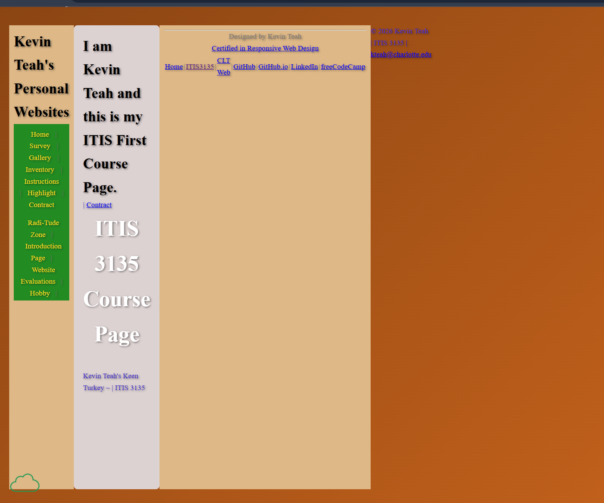

Peer Review
This page contains a peer evaluation for a classmate's Client Project Part 2 website progress.
Student Evaluated
Name: Teah, Kevin
Website Reviewed

Evaluation
- Checklist: I attempted to review the provided ITIS 3135 link, but the page did not load correctly from the URL given.
- Checklist: Because the site link was not accessible, I was unable to review the Client Project Pt. 2 content itself.
- Good: The strongest part of the site is the vertical navbar. It's unique
- Suggestion: A key improvement would be to verify that the published URL works before submission and before sending it to reviewers.
- Suggestion: If the project exists in another location, the student should provide the correct working link and make it easy to find from the site navigation.
- Continue: The student should continue to work on their Client Project.
Email Confirmation
I emailed the link to this review page to the person I evaluated.
Harsh Bhatewara
April 19, 2026